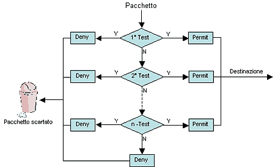
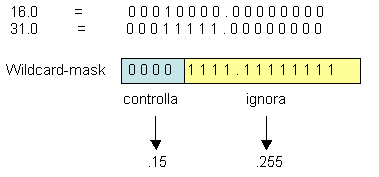
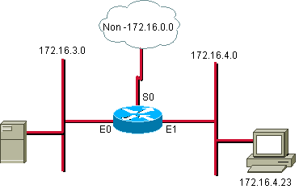

Le ACL (Access Control List) sono una lista di istruzioni da applicare alle interfacce di un router allo scopo di gestire il traffico, filtrando i pacchetti in entrata e in uscita.
Le ACL possono essere usate per tutti i protocolli di rete routabili.
Esistono varie ragioni per decidere di adoperare le ACL:
Le ACL vengono elaborate dal router in maniera sequenziale in base all’ordine in cui sono state inserite le varie clausole. Appena un pacchetto soddisfa una delle condizioni, la valutazione s’interrompe e il resto delle ACL non viene preso in considerazione. Il pacchetto viene quindi inoltrato o eliminato secondo l’istruzione eseguita (figura 1). Se il pacchetto non soddisfa nessuna delle condizioni viene scartato (si considera cha alla fine di un ACL non vuota ci sia l’istruzione deny any ovvero nega tutto).

Figura 1
Per il modo in cui vengono eseguite le ACL (in sequenza) occorre inserire le condizioni più restrittive all’inizio.
Posizionamento di un’ACL
Uno degli aspetti fondamentali da ricordare è il posizionamento delle ACL. Questo è di non secondaria importanza, in quanto un cattivo posizionamento delle ACL può aver un impatto negativo sulla rete:
- maggiori risorse utilizzate dal router nel processare i pacchetti;
- decadimento delle prestazioni della rete;
- collasso della rete stessa.
Due sono gli aspetti fondamentali da tenere in considerazione nel posizionamento di un’ACL:
I pacchetti scartati non andranno a utilizzare risorse della rete;
Processare le ACL richiede risorse aggiuntive per il router (questo è anche uno dei motivi per cui non bisogna abusare delle ACL, specie in presenza di processori poco potenti).
Cisco consiglia, a riguardo, di posizionare le ACL standard più vicino alla destinazione e le ACL Estese più vicino alla sorgente.
Configurazione di una ACL
Per creare una ACL su un router Cisco occorre seguire i seguenti passi in configuration mode:
1. Definire la ACL con il seguente comando:
Router(config)# access-list access-list number {permit|deny} {test-conditions}
– access-list number è il numero univoco che identifica ogni ACL e che ne definisce il tipo (vedi tabella 1). Dalla versione 11.2 del Cisco IOS si può utilizzare un nome al posto del numero.
–
Permit e deny definiscono le condizioni (permetti e nega) su come devono essere
maneggiati i pacchetti:
Permit indica che il pacchetto ha il permesso di utilizzare una o più
interfacce specificate di seguito;
deny indica che il pacchetto deve essere droppato.
– Il termine finale specifica la condizione da soddisfare.
| Protocollo |
Range |
| IP |
1-99 |
| Extended IP |
100-199 |
| AppleTalk |
600-699 |
| IPX |
800-899 |
| Extended IPX |
900-999 |
| IPX Service Advertising Protocol |
1000-1099 |
Access-list Number
2. si deve applicare la ACL a una o più interfacce:
Router(config-if)# access-group access-list number
La wildcard mask
La wildcard mask è un numero di 32-bit diviso in 4 ottetti, simile alla subnet-mask. La differenza sostanziale è che la wildcard-mask indica quali bit di un indirizzo IP devono essere controllati in un’ACL: il valore 0 nella wildcard-mask indica che il bit corrispondente deve essere controllato, il valore 1 che deve essere ignorato.
Es. Si supponga di voler testare gli indirizzi IP da 172.50.16.0 a 172.50.31.0.
In questo caso conviene analizzare esclusivamente gli ultimi due ottetti:

Per cui, in questo caso, la wildcard-mask avrà la forma 0.0.15.255.
Si possono anche utilizzare delle abbreviazioni. Nel caso si vogliano controllare tutti gli indirizzi (Cisco li indica con l’IP 0.0.0.0) si può utilizzare il termine any; per un singolo indirizzo si utilizza il termine host.
ESEMPIO
Invece di utilizzare la sintassi
Router(config)# access-list 1 permit 0.0.0.0 255.255.255.255
Router(config)# access-list 1 permit 172.30.24.12 0.0.0.0
si può utilizzare
Router(config)# access-list 1 permit any
Router(config)# access-list 1 permit host 172.30.24.12
Standard ACL
Le ACL standard vengono utilizzate per bloccare o permettere il traffico da una rete o da un host specifico o per negare una suite di protocolli. L’aspetto fondamentale delle ACL standard è che il controllo viene esclusivamente effettuato sull’indirizzo sorgente.
La sintassi del comando per i router Cisco è
Router(config)# access-list access-list number {permit|deny} source [source wildcard] [log]
dove
| Parametri |
Descrizione |
| Access-list-number |
Numero della ACL. Ne indica il nome e il tipo (es. da 1 a 99 per le ACL IP standard) |
| Permit |
Permette l’accesso se le condizioni sono soddisfatte |
| Deny |
Nega l’accesso se le condizioni sono soddisfatte |
| Source |
Indirizzo sorgente del pacchetto |
| Souce wildcard |
(Optional) La wildcard mask che deve essere applicata all’indirizzo sorgente |
| Log |
(Optional) Attiva i messaggi di log. Questi comprendono l’indirizzo sorgente, il numero di pacchetti e l’esito del controllo (permit o deny). I log vengono generati a intervalli di 5 minuti. |
Per eliminare una ACL bisogna utilizzare il comando
Router(config)# no access-list access-list number
Una volta definite le condizioni si deve applicare la ACL all’interfaccia desiderata, secondo la seguente sintassi:
Router(config-if)# ip access-group access-list number {in|out}
I parametri utilizzati sono descritti di seguito:
| Parametri |
Descrizione |
| Access-list-number |
Indica il numero della ACL che deve essere legata all’interfaccia. |
| In|out |
Specifica se la ACL va applicata all’interfaccia in entrata o in uscita. Una ACL in input fa sì che il router applichi prima la ACL e poi effettui il routine, mentre in output prima il routine e poi la ACL. Se non è specificato, per default è out. |
ESEMPI DI ACL STANDARD

Esempio n. 1: permettere il traffico da una determinate rete o sottoreteQuesto esempio dimostra come permettere tutto il traffico proveniente dalla rete 172.16.0.0 e contemporaneamente bloccare quello da altre reti (non-172.16.0.0).
access-list 1 permit 172.16.0.0 0.0.255.255
(access-list 1 deny any – implicito, non visibile nella lista)
interface ethernet 0
ip access-group 1 out
interface Ethernet 1
ip access-group 1 out
Esempio n. 2: negare il traffico da un host specifico
In questo esempio viene bloccato sull’interfaccia E0 esclusivamente il traffico proveniente dall’host 172.16.4.23.
access-list 2 deny 172.16.4.23 0.0.0.0
access-list 2 permit 0.0.0.0 255.255.255.255
(access-list 2 deny any – implicito, non visibile nella lista)
interface ethernet 0
ip access-group 2 out